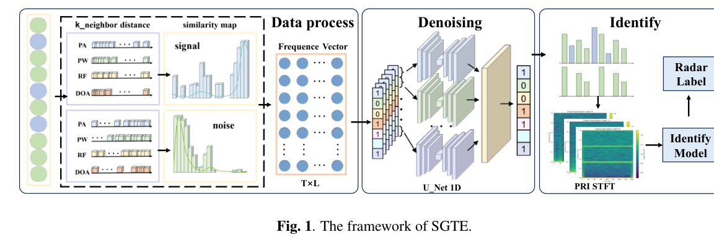
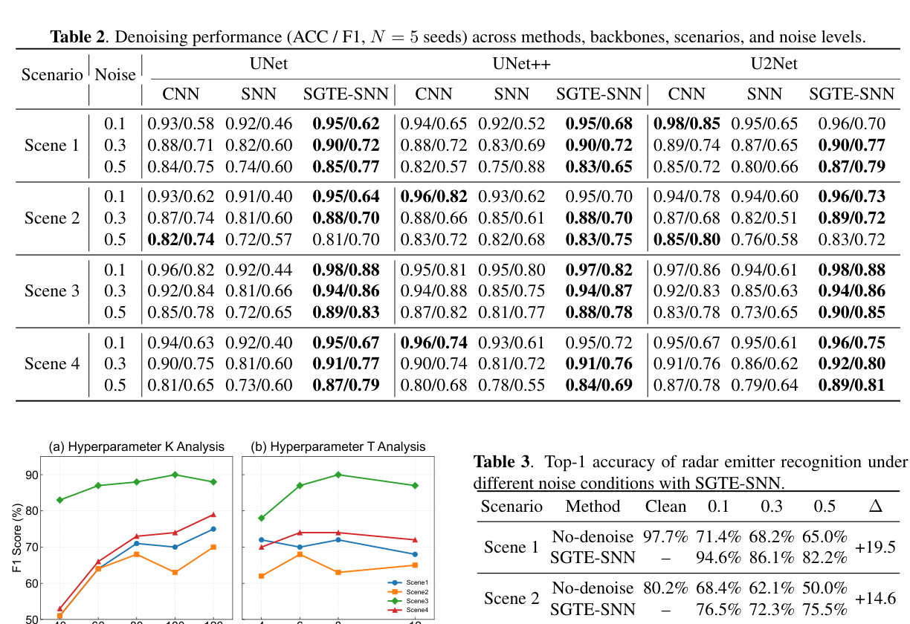

研究导读 · ICASSP 2026 · CCF-B
相似性引导的时间编码与雷达识别
SGTE-SNN: Similarity-Guided Temporal Encoding for Radar Emitter Denoising and Recognition
ICASSP 2026 - 2026 IEEE International Conference on Acoustics, Speech and Signal Processing (ICASSP), 20337-20341 (2026)
研究问题
高密度多源雷达环境中，PDW 序列常被噪声和干扰污染，单脉冲特征在时频域高度重叠，传统阈值或规则方法难以兼顾鲁棒性、实时性与边缘部署。
核心方法
SGTE 将 pulse-to-reference similarity 离散为直方图向量，并通过概率编码或可学习嵌入生成脉冲时序；理论上利用真实脉冲与噪声脉冲相似性分布的差异保持可分性，再由 SNN 完成去噪与识别。
方法步骤
- PDW sequence
从复杂雷达场景中接收带噪脉冲描述字序列。
- Similarity histogram
计算脉冲与参考样本的相似性并形成分布化表示。
- Temporal encoding
用概率编码或可学习嵌入生成结构化 spike train。
- SNN inference
完成脉冲去噪和辐射源识别，并保留事件驱动效率。
代表性发现
相似性分布比单个脉冲特征更能表达真实脉冲与噪声脉冲之间的结构差异。
科学意义
将脉冲与参考样本的关系组织为时间事件表示，使相似性结构能够用于脉冲网络的去噪与识别任务。
科研图


SGTE 处理框架
None · 图中把相似性编码、1D U-Net 去噪和 PRI-STFT 识别串成完整链路，展示从 PDW 序列到辐射源标签的处理过程。
关键思想是先把雷达脉冲与参考样本的关系转成结构化时序输入，再让 SNN 处理噪声场景下的稀疏事件。
图源：ICASSP 2026 - 2026 IEEE International Conference on Acoustics, Speech and Signal Processing (ICASSP), 20337-20341 (2026)。 © 2026 IEEE。
图像复用权待核验


去噪性能对比
None · 表格集中比较不同去噪方法、网络骨干、场景和噪声水平下的 ACC 与 F1。
结果用横向对比说明 SGTE-SNN 在高噪声和多场景条件下保持了更稳的去噪表现。
图源：ICASSP 2026 - 2026 IEEE International Conference on Acoustics, Speech and Signal Processing (ICASSP), 20337-20341 (2026)。 © 2026 IEEE。
图像复用权待核验
适用条件
适合作为“雷达信号如何进入 SNN”的入口论文阅读：先看相似性分布，再看编码方式，最后看去噪与识别性能。